Racous laughter, Heartfelt Distress ,Bewildered Silence, tremendrous roars. There are several emotional noises that we come across in our everyday life. Several Digital Signal Processing algorithms and frequency specific features are used to analyse these emotional sounds. The distinguishability of emotional features in audio signals were studied first followed by emotion classification performed on a custom dataset.Features extracted consist of Centroid, Spectral Spread, Entropy, Spectral Energy ,Zero Crossing, Pitch, Mel Frequency Cepstral Coefficients(MFCC) and others. Classifiers are trained using the features extracted from the analysed data and are used to test on various sounds to distinguish a particular emotional(laugh/cry) from other. It is observed that various emotional sounds collected from a particular speaker are give better results in classification of emotion than when collected from many speakers.
Keywords: Emotion Analysis, Emotion Classification, Specral Spread, Entropy, Energy,Mel-Frequency Cepstral Coefficients.
EMOTION CLASSIFICATION
Abstract
1. Introduction
Recognizing emotion from speech has become one the active research themes in speech processing and in applications based on human-computer interaction. Sound signal is one of the main medium of communication and it can be processed to recognize the speaker emotion.The basic principle behind emotion recognition lies with analysing the acoustic difference that occurs when uttering the same thing under different emotional situations. Besides facial expressions or gestures, speech has proven as one of the most promising modalities for the automatic emotion recognition.
1.1 Introduction to Problem
The emotion recognition systems have the aim of recognizing emotions, in this case, from the speech. The problems introduced to these systems are: How the emotions are presented inside an audio signal? How well various DSP Algorithms be used to analyze and extract signal features from a given audio signal? How can a classifier use labelled samples to classify the emotion of a new one?
1.2 Figure
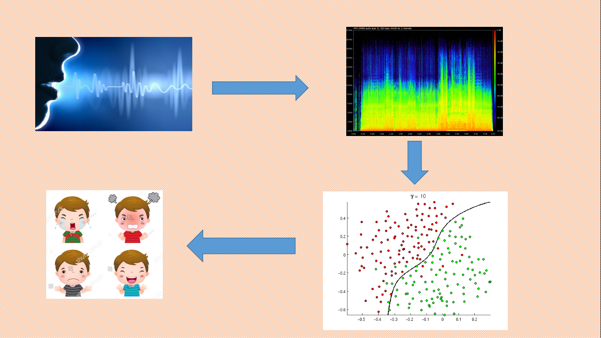
Speech Signal received is processed using Digital Signal Algorithms and various features are extracted which are used to train ML Algorithms.
Speech Signal received is processed using Digital Signal Algorithms and various features are extracted which are used to train ML Algorithms.
1.3 Literature Review
Following Papers are helpful as reference :
1) Speech Emotion classification using machine learning Algorithms
2) Detection and analysis of emotion from speech signals
3) Techniques for feature extraction in speech recognition systems
4) Emotion recognition of speech using Naive Bayes classifier
5) Speech recognition using Digital Processing Book
1) Speech Emotion classification using machine learning Algorithms
2) Detection and analysis of emotion from speech signals
3) Techniques for feature extraction in speech recognition systems
4) Emotion recognition of speech using Naive Bayes classifier
5) Speech recognition using Digital Processing Book
1.4 Proposed Approach
Audio Signals has various Spectral features which are greatly useful to analyse and infer about the speaker. Initially Dataset is processed by removal of silence and noise using end point detection. Frames from the processed data are used to extract features such as Centroid, Spectral Spread, Entropy, Spectral energy and Mel Frequency Cepstral Coefficients.These extracted features are used to train svm classifiers in one Vs All fashion. In this project above mentioned features are used to distinguish laugh and cry .
1.5 Report Organization
The following secction explains various features used to extract features out of the given dataset. Section 3 decribes the data set used and the various results obtained . Section 4, we summarises the result.
2. Proposed Approach
Short Term Processing(STP) of Audio Signal is done to extract various features to train a classifier.An Audio signal(Speech) may be non-stationary in nature but when viewed in terms of short span 20-30 ms it might be stationary.
Various midterm features extracted include:
Various midterm features extracted include:
1) Zero Crossing Rate:
The zero-crossing rate is the rate of sign-changes along a signal, i.e., the rate at which the signal changes from positive to negative or back. It is a key feature to classify percussive sounds. Since high frequencies imply high zero crossing rates, and low frequencies imply low zero-crossing rates, there is a strong correlation between zero-crossing rate and energy distribution with frequency. 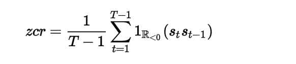
2) Pitch:
The pitch is the distinctive quality of a sound, dependent primarily on the frequency of the sound waves produced by its source, which can be computed by the pitch detection algorithm (PDA). High Pitch often refres to highe frequency oscillated signals and low pitch refers to low frequency oscillated ones.
3) Cepstrum:
A cepstrum is the result of taking the inverse Fourier transform (IFT) of the logarithm of the estimated spectrum of a signal.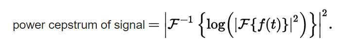
4) Entropy:
Weiner Entropy measure of Spectral flatness or tonality coefficient is used to characterise audio spectrum. Spectral flatness provides a way to quantify how noise-like a sound is, as opposed to being tone-like.To extrac entropy feature speech is first pre-emphasized using a pre-emphasis filter in order to spectrally flatten the signal, and then the pre-emphasized speech is separated into short segments called frames. This will significantly enhance the ability to identify the emotional aspects of speech. In order to reduce the familiar edge effects, Hamming window is applied to each frame.
The FFT of X(i,n) is given by Where X(i,n) is the nth frame and the ith frequency component. M denotes the number of points in the FFT and x(m,n) is the nth frame in the mth sample
Where X(i,n) is the nth frame and the ith frequency component. M denotes the number of points in the FFT and x(m,n) is the nth frame in the mth sample
5) Spectral Centroid:
The spectral centroid is used to characterise a spectrum. It indicates where the "center of mass" (around what frequency most of the spectrum is presnt). Perceptually, it has a robust connection with the impression of "brightness" of a sound.This feature is similar to formant frequencies and provides complementary information to cepstral features and also robust to noise. In short this would give us an idea to what frequency ange most of the power of the spectrum would lie in. X(k) represents weighted frequency values or magnitude of bin k and F(k) represents central frequency of that bin.
X(k) represents weighted frequency values or magnitude of bin k and F(k) represents central frequency of that bin.
6) Spectral Energy Distribution:
Spectral energy distribution is a plot of brightness or flux density versus frequency or wavelength of light.
7) Spectral Spread:
Spectral Spread is a measure of absolute deviation from spectral centroid.
8) Spectral Skewness:
The skewness of a spectrum is the ratio of third central moment of spectrum and the 1.5 power of the second central moment.
9) Spectral Kurtosis:
x[n] be a real dicrete time sequence and X(m) is the n-point DFT. Spectral Kurtosis Kr - rth order cumulant is defined as
10) Mel Frequency Cepstral Coefficients:
The first step in any automatic speech recognition system is to extract features. Speech is the sound that is produced by human that are filtered by the shape of the vocal tract including tongue, teeth etc. This shape determine what sound comes out. The shape of the vocal tract manifests itself in the envelope of the short time power spectrum, and the job of MFCC is to accurately represent this envelope.
Implementation Steps
1. Frame the signal into short frames.
2. For each frame calculate the periodogram estimate of the power spectrum.
3. Apply the mel filterbank to the power spectra, sum the energy in each filter.
4. Take the logarithm of all filternbank energies.
5. Take the DCT of the log filterbank energies.
6. Keep DCT coefficient 2-13, discard the rest.
Explanation
An audio signal is constantly changing, so to simply things we assume that on short time scales the audio signal doesn’t change much. We frame the signal into 20-40ms frames. If the frames is much shorter we don’t have enough samples to get a reliable spectral estimate, if it is longer the signal changes too much throughout the frame.
After that we calculate the power spectrum of each frame. Periodogram estimate identify which frequencies are present in the frame. Periodogram spectral estimate still contains a lot of information not required for Speech recognition. For this reason, we take clumps of periodogram bins and sum them up to get an idea of how much energy exists in various frequency regions. This is performed by our Mel filterbank. Mel Scale tells us exactly how to space our filterbanks and how wide to make them.
Once we have the filterbank energies, we take the logarithm of them. The final step is to compute the DCT of the log filterbank energies. There are two main reasons this is performed. Cos our filterbank are all overlappin, the filterbank energies are quite correlated with each other. The DCT de-correlates the energies which means diagonal co-variance matrices can be used to model the features in a classifier. But only 12 of the 26 DCT coefficients are kept.
Calculations
1) Formula for converting from frequency to Mel Scale :
M(f) = 1125 ln(1 + f/700)
2) Discrete Fourier Transform of the frame
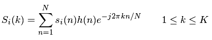 ‘i’ denotes the frame number corresponding to the time-domain frame.
3) Power Spectrum of frame
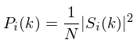 This is called the periodogram estimate of the power spectrum.
The zero-crossing rate is the rate of sign-changes along a signal, i.e., the rate at which the signal changes from positive to negative or back. It is a key feature to classify percussive sounds. Since high frequencies imply high zero crossing rates, and low frequencies imply low zero-crossing rates, there is a strong correlation between zero-crossing rate and energy distribution with frequency. 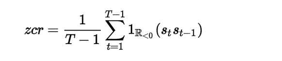
2) Pitch:
The pitch is the distinctive quality of a sound, dependent primarily on the frequency of the sound waves produced by its source, which can be computed by the pitch detection algorithm (PDA). High Pitch often refres to highe frequency oscillated signals and low pitch refers to low frequency oscillated ones.
3) Cepstrum:
A cepstrum is the result of taking the inverse Fourier transform (IFT) of the logarithm of the estimated spectrum of a signal.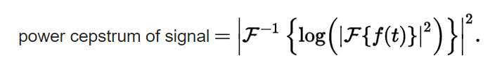
4) Entropy:
Weiner Entropy measure of Spectral flatness or tonality coefficient is used to characterise audio spectrum. Spectral flatness provides a way to quantify how noise-like a sound is, as opposed to being tone-like.To extrac entropy feature speech is first pre-emphasized using a pre-emphasis filter in order to spectrally flatten the signal, and then the pre-emphasized speech is separated into short segments called frames. This will significantly enhance the ability to identify the emotional aspects of speech. In order to reduce the familiar edge effects, Hamming window is applied to each frame.
The FFT of X(i,n) is given by
Where X(i,n) is the nth frame and the ith frequency component. M denotes the number of points in the FFT and x(m,n) is the nth frame in the mth sample5) Spectral Centroid:
The spectral centroid is used to characterise a spectrum. It indicates where the "center of mass" (around what frequency most of the spectrum is presnt). Perceptually, it has a robust connection with the impression of "brightness" of a sound.This feature is similar to formant frequencies and provides complementary information to cepstral features and also robust to noise. In short this would give us an idea to what frequency ange most of the power of the spectrum would lie in.
X(k) represents weighted frequency values or magnitude of bin k and F(k) represents central frequency of that bin.6) Spectral Energy Distribution:
Spectral energy distribution is a plot of brightness or flux density versus frequency or wavelength of light.
7) Spectral Spread:
Spectral Spread is a measure of absolute deviation from spectral centroid.
8) Spectral Skewness:
The skewness of a spectrum is the ratio of third central moment of spectrum and the 1.5 power of the second central moment.
9) Spectral Kurtosis:
x[n] be a real dicrete time sequence and X(m) is the n-point DFT. Spectral Kurtosis Kr - rth order cumulant is defined as
10) Mel Frequency Cepstral Coefficients:
The first step in any automatic speech recognition system is to extract features. Speech is the sound that is produced by human that are filtered by the shape of the vocal tract including tongue, teeth etc. This shape determine what sound comes out. The shape of the vocal tract manifests itself in the envelope of the short time power spectrum, and the job of MFCC is to accurately represent this envelope.
Implementation Steps
1. Frame the signal into short frames.
2. For each frame calculate the periodogram estimate of the power spectrum.
3. Apply the mel filterbank to the power spectra, sum the energy in each filter.
4. Take the logarithm of all filternbank energies.
5. Take the DCT of the log filterbank energies.
6. Keep DCT coefficient 2-13, discard the rest.
Explanation
An audio signal is constantly changing, so to simply things we assume that on short time scales the audio signal doesn’t change much. We frame the signal into 20-40ms frames. If the frames is much shorter we don’t have enough samples to get a reliable spectral estimate, if it is longer the signal changes too much throughout the frame.
After that we calculate the power spectrum of each frame. Periodogram estimate identify which frequencies are present in the frame. Periodogram spectral estimate still contains a lot of information not required for Speech recognition. For this reason, we take clumps of periodogram bins and sum them up to get an idea of how much energy exists in various frequency regions. This is performed by our Mel filterbank. Mel Scale tells us exactly how to space our filterbanks and how wide to make them.
Once we have the filterbank energies, we take the logarithm of them. The final step is to compute the DCT of the log filterbank energies. There are two main reasons this is performed. Cos our filterbank are all overlappin, the filterbank energies are quite correlated with each other. The DCT de-correlates the energies which means diagonal co-variance matrices can be used to model the features in a classifier. But only 12 of the 26 DCT coefficients are kept.
Calculations
1) Formula for converting from frequency to Mel Scale :
M(f) = 1125 ln(1 + f/700)
2) Discrete Fourier Transform of the frame
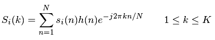 ‘i’ denotes the frame number corresponding to the time-domain frame.
3) Power Spectrum of frame
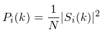 This is called the periodogram estimate of the power spectrum.
3. Experiments & Results
3.1 Oxford Vocal (OxVoc) Sound Database Description
The database consists of natural affective vocal sounds from human adults (male and female). This database contain 49 non-verbal sounds expressing a range of happy, sad and neutral emotional states. The major advantage of this database are the inclusion of vocalizations from naturalistic situations, which represent genuine expressions of emotion. Out of 49 data-point in the database, 19 stimuli are of Adult cry and 30 of Adult laugh. The average frequency of the adult cry stimuli is 368.22 Hz, and that of adult laugh is 348.83 Hz
Link to Dataset: Oxford Vocal Sound Database
Link to Working code: Emotion Detection working codes
Link to Dataset: Oxford Vocal Sound Database
Link to Working code: Emotion Detection working codes
3.2 Discussion
After a brief literature review, it was found that emotions were classified in 2 distinct ways, by either classifying them individually or by plotting them on a scale of arousal and excitation. We approached the task from the first approach due to low number of classes we had to classify while keeping the philosophy of the second approach in extracting features.
Features Comparison
2D and 3D plot are shown for better understanding and visualization of features. 2D plots contains one features on x-axis and other on y-axis. The two emotion are plotted on the same graph to see the correlation between them. 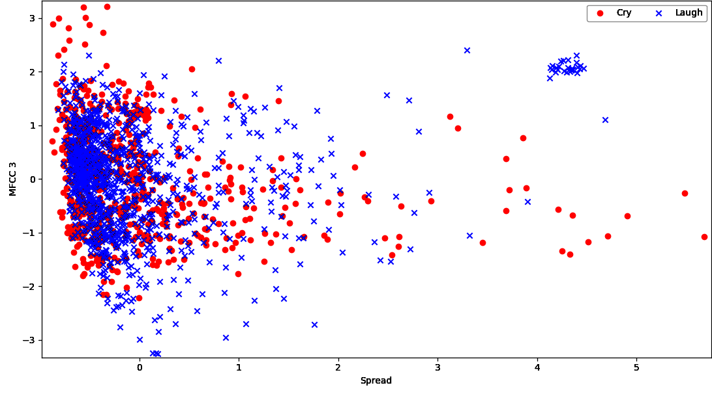 In the above figure we have plotted spread and MFCC 3 features. We can see that laugh is majorly contained in two areas only while cry is much more distributed. This gives us a very low value of correlation coefficient.
Considering the redundancy in feature extraction, a correlation matrix is designed which is shown below, 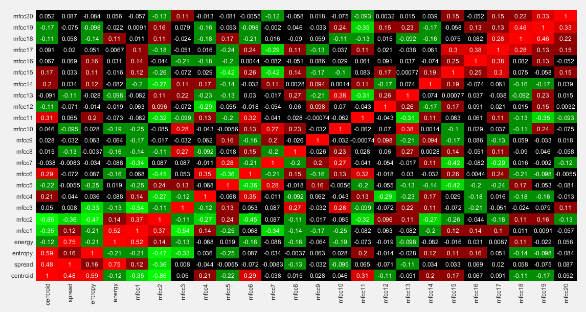 Highly correlated features are colored with dark red, while highly uncorrelated features are colored with black color. Green are the intermediate ones. We can see that features with itself gives a correlation of 1(diagonal left to right).
Classification
The features that we extracted and after a brief analysis, found to have some differentiating factor were, spectral spread, spectral centroid, spectral energy, spectral entropy and the Mel Frequency Cepstral Coefficients. The first few coefficients of MFCC have said to give information on the timbre of the voice, which we correspond to the arousal aspect while features such as spectral spread, centroid and entropy provide information on the FFT spectrum itself.
The two classes we had to classify are: Laugh and Cry from male and female natural sounds from whose sound clips 40ms frames were extracted.
Two main classifiers were adopted to run the classification task, a Support Vector Machine with a Radial Basis Function kernel and then later on a Neural network ( Multi Layer Perceptron)
Running on a training set of 5000 frames we have the following training results:
SVM with an RBF kernel
5-fold Cross Validation Accuracy:
85% 85.3% 85.5% 85.6% 85.4%
Test Accuracy: 80.1%
3-Layer Neural Network 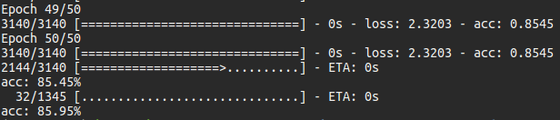 Training Accuracy: 85.45%
Testing Accuracy: 85.95%
Features Comparison
2D and 3D plot are shown for better understanding and visualization of features. 2D plots contains one features on x-axis and other on y-axis. The two emotion are plotted on the same graph to see the correlation between them. 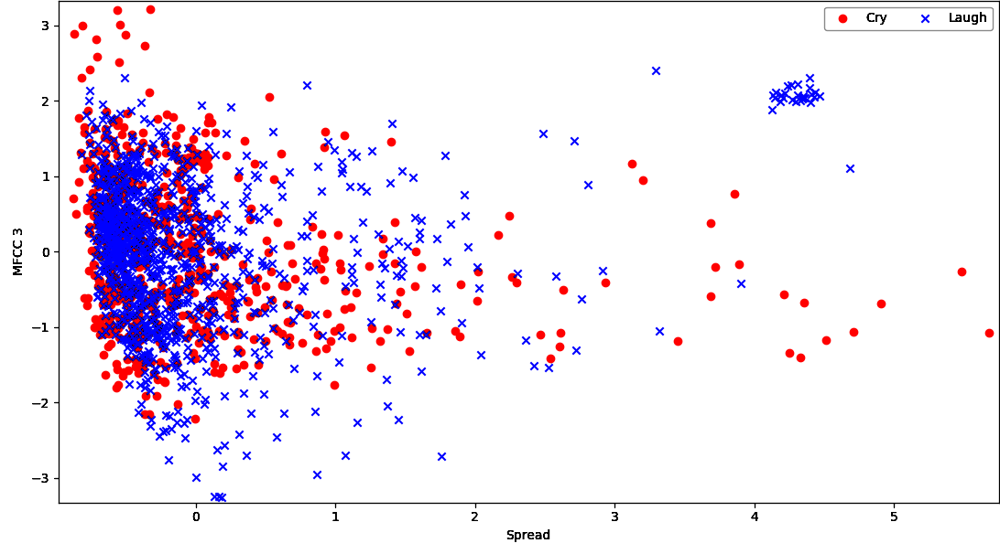 In the above figure we have plotted spread and MFCC 3 features. We can see that laugh is majorly contained in two areas only while cry is much more distributed. This gives us a very low value of correlation coefficient.
Considering the redundancy in feature extraction, a correlation matrix is designed which is shown below, 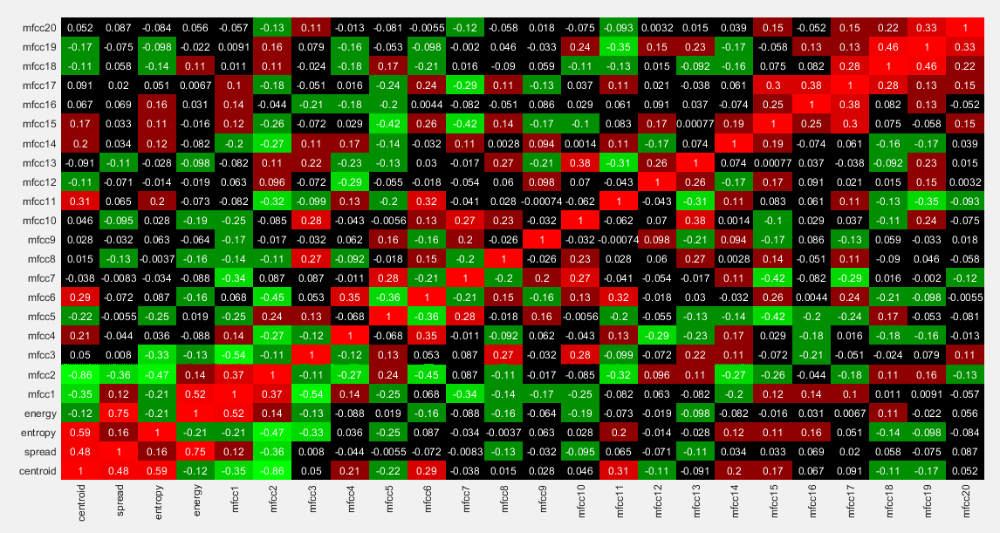 Highly correlated features are colored with dark red, while highly uncorrelated features are colored with black color. Green are the intermediate ones. We can see that features with itself gives a correlation of 1(diagonal left to right).
Classification
The features that we extracted and after a brief analysis, found to have some differentiating factor were, spectral spread, spectral centroid, spectral energy, spectral entropy and the Mel Frequency Cepstral Coefficients. The first few coefficients of MFCC have said to give information on the timbre of the voice, which we correspond to the arousal aspect while features such as spectral spread, centroid and entropy provide information on the FFT spectrum itself.
The two classes we had to classify are: Laugh and Cry from male and female natural sounds from whose sound clips 40ms frames were extracted.
Two main classifiers were adopted to run the classification task, a Support Vector Machine with a Radial Basis Function kernel and then later on a Neural network ( Multi Layer Perceptron)
Running on a training set of 5000 frames we have the following training results:
SVM with an RBF kernel
5-fold Cross Validation Accuracy:
85% 85.3% 85.5% 85.6% 85.4%
Test Accuracy: 80.1%
3-Layer Neural Network 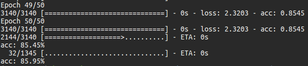 Training Accuracy: 85.45%
Testing Accuracy: 85.95%
4. Conclusions
4.1 Summary
Write something here.
4.2 Future Extensions
At present the present code is used to distinguish two emotions . This can be extended to multi emotion detection.